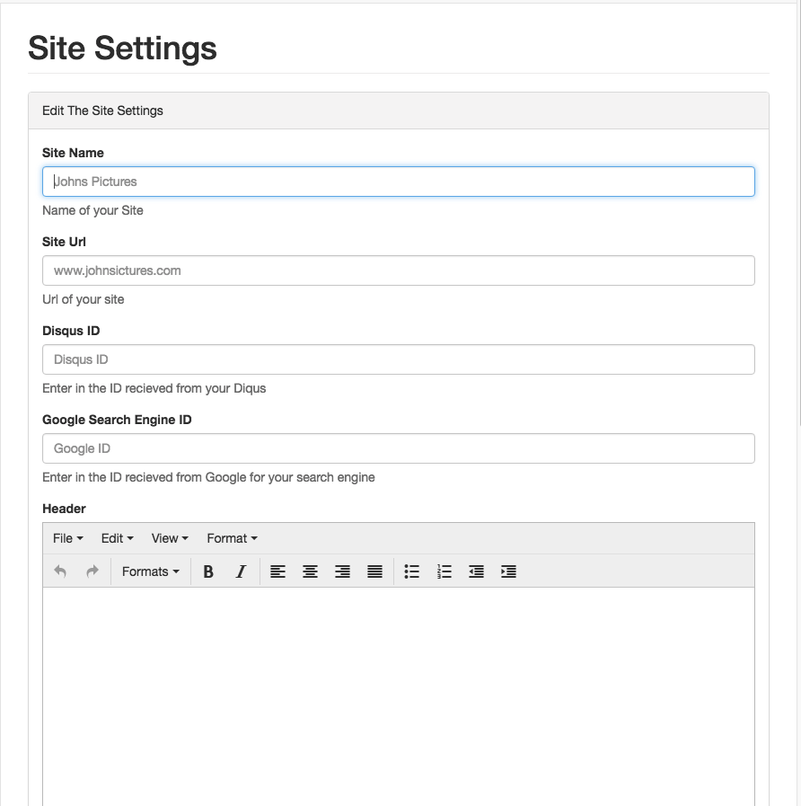

Site Settings
This is the section of the dashboard that controls the core configuration of features that will be constant through out your whole site.

Site URL
If you go to your site right now, notice that when you look at the current URL address of your site is not quite attractive. This setting allows you to set the site URL/Domain name you wish your site to be reached at. This would typically be linked up through your CDN with th a domain you own.
Google Search URL
If you would like your site to include a searchbar, this setting allows you to include one!
More Info
Disqus URL
If you would like to run a comments section for your posts that you create on your site you
may do so.
Get Started Here
Header
This Section allows you to customize the header of your site
Footer
This Section allows you to customize the footer of your site
Nice Structure!
Now Lets add some content!
Managing Your Content >>
<< Installation